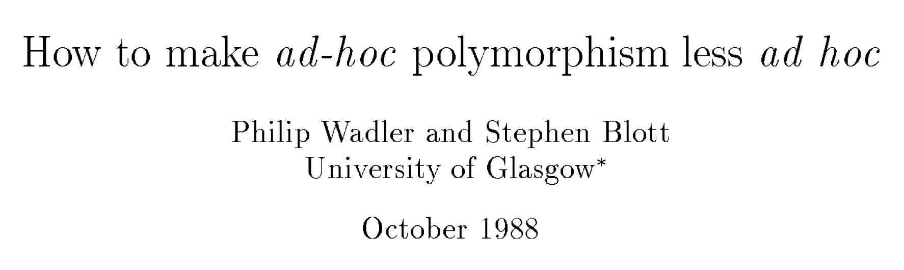

Past two Weeks
How to implement language constructs?
- Local variables and scope
- Environments and Closures
- Parsing
Next two Weeks
Modern language features for structuring programs
- Overloading
- Type classes
- Monads
Overloading Operators: Arithmetic
The + operator works for a bunch of different types.
For Integer:
λ> 2 + 3
5for Double precision floats:
λ> 2.9 + 3.5
6.4
Overloading Comparisons
Similarly we can compare different types of values
λ> 2 == 3
False
λ> [2.9, 3.5] == [2.9, 3.5]
True
λ> ("cat", 10) < ("cat", 2)
False
λ> ("cat", 10) < ("cat", 20)
True
Ad-Hoc Overloading
Seems unremarkable?
Languages since the dawn of time have supported “operator overloading”
To support this kind of ad–hoc polymorphism
Ad-hoc: “created or done for a particular purpose as necessary.”
You really need to add and compare values of multiple types!
Haskell has no caste system
No distinction between operators and functions
- All are first class citizens!
But then, what type do we give to functions like + and == ?
QUIZ
Which of the following would be appropriate types for (+) ?
(A) (+) :: Integer -> Integer -> Integer
(B) (+) :: Double -> Double -> Double
(C) (+) :: a -> a -> a
(D) All of the above
(E) None of the above
Integer -> Integer -> Integer is bad because?
- Then we cannot add
Doubles!
Double -> Double -> Double is bad because?
- Then we cannot add
Doubles!
a -> a -> a is bad because?
- That doesn’t make sense, e.g. to add two
Boolor two[Int]or two functions!
Type Classes for Ad Hoc Polymorphism
Haskell solves this problem with an insanely slick mechanism called type-classes, introduced by Wadler and Blott

BTW: The paper is one of the clearest examples of academic writing I have seen.
The next time you hear a curmudgeon say all the best CS was done in the 60s, just point them to the above.
Qualified Types
To see the right type, lets ask:
λ> :type (+)
(+) :: (Num a) => a -> a -> aWe call the above a qualified type. Read it as +
- takes in two
avalues and returns anavalue
for any type a that
- is a
Numor - implements the
Numinterface or - is an instance of a
Num.
The name Num can be thought of as a predicate or constraint over types
- Similar but different than Java interfaces
Some types are Nums
Examples include Integer, Double etc
- Any such values of those types can be passed to
+.
Other types are not Nums
Examples include Char, String, functions etc,
- Values of those types cannot be passed to
+.
λ> True + False
<interactive>:15:6:
No instance for (Num Bool) arising from a use of ‘+’
In the expression: True + False
In an equation for ‘it’: it = True + FalseAha! Now those no instance for error messages should make sense!
- Haskell is complaining that
TrueandFalseare of typeBool - and that
Boolis not an instance ofNum.
Type Class is a Set of Operations
A type class is a collection of operations (functions) that must exist for the underlying type.
The Eq Type Class
The simplest type class is perhaps, Eq
class Eq a where
(==) :: a -> a -> Bool
(/=) :: a -> a -> BoolA type a is an instance of Eq if there are two functions
==and/=
That determine if two a values are respectively equal or disequal.
The Show Type Class
The type class Show requires that instances be convertible to String (which can then be printed out)
class Show a where
show :: a -> StringIndeed, we can test this on different (built-in) types
λ> show 2
"2"
λ> show 3.14
"3.14"
λ> show (1, "two", ([],[],[]))
"(1,\"two\",([],[],[]))"(Hey, whats up with the funny \"?)
When we type an expression into ghci, it computes the value and then calls show on the result. Thus, if we create a new type by
data Unshowable = A | B | Cand then create values of the type,
λ> let x = A
λ> :type x
x :: Unshowablebut then we cannot view them
λ> x
<interactive>:1:0:
No instance for (Show Unshowable)
arising from a use of `print' at <interactive>:1:0
Possible fix: add an instance declaration for (Show Unshowable)
In a stmt of a 'do' expression: print itand we cannot compare them!
λ> x == x
<interactive>:1:0:
No instance for (Eq Unshowable)
arising from a use of `==' at <interactive>:1:0-5
Possible fix: add an instance declaration for (Eq Unshowable)
In the expression: x == x
In the definition of `it': it = x == xAgain, the previously incomprehensible type error message should make sense to you.
Creating Instances
Tell Haskell how to show or compare values of type Unshowable
By creating instances of Eq and Show for that type:
instance Eq Unshowable where
(==) A A = True -- True if both inputs are A
(==) B B = True -- ...or B
(==) C C = True -- .. or C
(==) _ _ = False -- otherwise
(/=) x y = not (x == y) -- Test if `x == y` and negate result!EXERCISE Lets create an instance for Show Unshowable
Automatic Derivation
This is silly: we should be able to compare and view Unshowble “automatically”!
Haskell lets us automatically derive functions for some classes in the standard library.
To do so, we simply dress up the data type definition with
data Showable = A' | B' | C'
deriving (Eq, Show) -- tells Haskell to automatically generate instancesNow we have
λ> let x' = A'
λ> :type x'
x' :: Showable
λ> x'
A'
λ> x' == x'
True
λ> x' == B'
False
Standard Typeclass Hierarchy
Let us now peruse the definition of the Num typeclass.
λ> :info Num
class (Eq a, Show a) => Num a where
(+) :: a -> a -> a
(*) :: a -> a -> a
(-) :: a -> a -> a
negate :: a -> a
abs :: a -> a
signum :: a -> a
fromInteger :: Integer -> aA type a is an instance of (i.e. implements) Num if
- The type is also an instance of
EqandShow, and - There are functions for adding, multiplying, subtracting, negating etc values of that type.
In other words in addition to the “arithmetic” operations, we can compare two Num values and we can view them (as a String.)
Haskell comes equipped with a rich set of built-in classes.

In the above picture, there is an edge from Eq and Show to Num because for something to be a Num it must also be an Eq and Show.
The Ord Typeclass
Another typeclass you’ve used already is the one for Ordering values:
λ> :info (<)
class Eq a => Ord a where
...
(<) :: a -> a -> Bool
...For example:
λ> 2 < 3
True
λ> "cat" < "dog"
True
QUIZ
Recall the datatype:
data Showable = A' | B' | C' deriving (Eq, Show)What is the result of:
λ> A' < B'(A) True (B) False (C) Type error (D) Run-time exception
Using Typeclasses
Typeclasses integrate with the rest of Haskell’s type system.
Lets build a small library for Environments mapping keys k to values v
data Env k v
= Def v -- default value `v` to be used for "missing" keys
| Bind k v (Env k v) -- bind key `k` to the value `v`
deriving (Show)
An API for Env
Lets write a small API for Env
-- >>> let env0 = add "cat" 10.0 (add "dog" 20.0 (Def 0))
-- >>> get "cat" env0
-- 10
-- >>> get "dog" env0
-- 20
-- >>> get "horse" env0
-- 0Ok, lets implement!
-- | 'add key val env' returns a new env that additionally maps `key` to `val`
add :: k -> v -> Env k v -> Env k v
add key val env = ???
-- | 'get key env' returns the value of `key` and the "default" if no value is found
get :: k -> Env k v -> v
get key env = ???
Oops, y u no check?
Constraint Propagation
Lets delete the types of add and get and see what Haskell says their types are!
λ> :type get
get :: (Eq k) => k -> v -> Env k v -> Env k vHaskell tells us that we can use any k value as a key as long as the value is an instance of the Eq typeclass.
How, did GHC figure this out?
- If you look at the code for
getyou’ll see that we check if two keys are equal!
EXERCISE (Do at home)
Write an optimized version of
addthat ensures the keys are in increasing order,getthat gives up and returns the “default” the moment we see a key thats larger than the one we’re looking for.
(How) do you need to change the type of Env?
(How) do you need to change the types of get and add?
Explicit Signatures
While Haskell is pretty good about inferring types in general, there are cases when the use of type classes requires explicit annotations (which change the behavior of the code.)
For example, Read is a built-in typeclass, where any instance a of Read has a function
read :: (Read a) => String -> awhich can parse a string and turn it into an a.
That is, Read is the opposite of Show.
Quiz
What does the expression read "2" evaluate to?
(A) compile time error
(B) "2" :: String
(C) 2 :: Integer
(D) 2.0 :: Double
(E) run-time exception
Haskell is foxed!
- Doesn’t know what type to convert the string to!
- Doesn’t know which of the
readfunctions to run!
Did we want an Int or a Double or maybe something else altogether?
Thus, here an explicit type annotation is needed to tell Haskell what to convert the string to:
λ> (read "2") :: Int
2
λ> (read "2") :: Float
2.0Note the different results due to the different types.
Creating Typeclasses
Typeclasses are useful for many different things.
We will see some of those over the next few lectures.
Lets conclude today’s class with a quick example that provides a small taste.
JSON
JavaScript Object Notation or JSON is a simple format for transferring data around. Here is an example:
{ "name" : "Ranjit"
, "age" : 41.0
, "likes" : ["guacamole", "coffee", "bacon"]
, "hates" : [ "waiting" , "grapefruit"]
, "lunches" : [ {"day" : "monday", "loc" : "zanzibar"}
, {"day" : "tuesday", "loc" : "farmers market"}
, {"day" : "wednesday", "loc" : "harekrishna"}
, {"day" : "thursday", "loc" : "faculty club"}
, {"day" : "friday", "loc" : "coffee cart"} ]
}In brief, each JSON object is either
a base value like a string, a number or a boolean,
an (ordered) array of objects, or
a set of string-object pairs.
A JSON Datatype
We can represent (a subset of) JSON values with the Haskell datatype
data JVal
= JStr String
| JNum Double
| JBool Bool
| JObj [(String, JVal)]
| JArr [JVal]
deriving (Eq, Ord, Show)Thus, the above JSON value would be represented by the JVal
js1 =
JObj [("name", JStr "Ranjit")
,("age", JNum 41.0)
,("likes", JArr [ JStr "guacamole", JStr "coffee", JStr "bacon"])
,("hates", JArr [ JStr "waiting" , JStr "grapefruit"])
,("lunches", JArr [ JObj [("day", JStr "monday")
,("loc", JStr "zanzibar")]
, JObj [("day", JStr "tuesday")
,("loc", JStr "farmers market")]
, JObj [("day", JStr "wednesday")
,("loc", JStr "hare krishna")]
, JObj [("day", JStr "thursday")
,("loc", JStr "faculty club")]
, JObj [("day", JStr "friday")
,("loc", JStr "coffee cart")]
])
]Serializing Haskell Values to JSON
Lets write a small library to serialize Haskell values as JSON.
We could write a bunch of functions like
doubleToJSON :: Double -> JVal
doubleToJSON = JNum
stringToJSON :: String -> JVal
stringToJSON = JStr
boolToJSON :: Bool -> JVal
boolToJSON = JBoolSerializing Collections
But what about collections, namely lists of things?
doublesToJSON :: [Double] -> JVal
doublesToJSON xs = JArr (map doubleToJSON xs)
boolsToJSON :: [Bool] -> JVal
boolsToJSON xs = JArr (map boolToJSON xs)
stringsToJSON :: [String] -> JVal
stringsToJSON xs = JArr (map stringToJSON xs)This is getting rather tedious
- We are rewriting the same code :(
Serializing Collections (refactored with HOFs)
You could abstract by making the individual-element-converter a parameter
xsToJSON :: (a -> JVal) -> [a] -> JVal
xsToJSON f xs = JArr (map f xs)
xysToJSON :: (a -> JVal) -> [(String, a)] -> JVal
xysToJSON f kvs = JObj [ (k, f v) | (k, v) <- kvs ]But this is *still rather tedious** as you have to pass in the individual data converter (yuck)
λ> doubleToJSON 4
JNum 4.0
λ> xsToJSON stringToJSON ["coffee", "guacamole", "bacon"]
JArr [JStr "coffee",JStr "guacamole",JStr "bacon"]
λ> xysToJSON stringToJSON [("day", "monday"), ("loc", "zanzibar")]
JObj [("day",JStr "monday"),("loc",JStr "zanzibar")]This gets more hideous when you have richer objects like
lunches = [ [("day", "monday"), ("loc", "zanzibar")]
, [("day", "tuesday"), ("loc", "farmers market")]
]because we have to go through gymnastics like
λ> xsToJSON (xysToJSON stringToJSON) lunches
JArr [ JObj [("day",JStr "monday") ,("loc",JStr "zanzibar")]
, JObj [("day",JStr "tuesday") ,("loc",JStr "farmers market")]
]Yikes. So much for readability
Is it too much to ask for a magical toJSON that just works?
Typeclasses To The Rescue
Lets define a typeclass that describes types a that can be converted to JSON.
class JSON a where
toJSON :: a -> JValNow, just make all the above instances of JSON like so
instance JSON Double where
toJSON = JNum
instance JSON Bool where
toJSON = JBool
instance JSON String where
toJSON = JStrThis lets us uniformly write
λ> toJSON 4
JNum 4.0
λ> toJSON True
JBool True
λ> toJSON "guacamole"
JStr "guacamole"Bootstrapping Instances
The real fun begins when we get Haskell to automatically bootstrap the above functions to work for lists and key-value lists!
instance JSON a => JSON [a] where
toJSON xs = JArr (map toJSON xs)The above says, if a is an instance of JSON, that is, if you can convert a to JVal then here’s a generic recipe to convert lists of a values!
λ> toJSON [True, False, True]
JArr [JBln True, JBln False, JBln True]
λ> toJSON ["cat", "dog", "Mouse"]
JArr [JStr "cat", JStr "dog", JStr "Mouse"]or even lists-of-lists!
λ> toJSON [["cat", "dog"], ["mouse", "rabbit"]]
JArr [JArr [JStr "cat",JStr "dog"],JArr [JStr "mouse",JStr "rabbit"]]We can pull the same trick with key-value lists
instance (JSON a) => JSON [(String, a)] where
toJSON kvs = JObj [ (k, toJSON v) | (k, v) <- kvs ]after which, we are all set!
λ> toJSON lunches
JArr [ JObj [ ("day",JStr "monday"), ("loc",JStr "zanzibar")]
, JObj [("day",JStr "tuesday"), ("loc",JStr "farmers market")]
]It is also useful to bootstrap the serialization for tuples (up to some fixed size) so we can easily write “non-uniform” JSON objects where keys are bound to values with different shapes.
instance (JSON a, JSON b) => JSON ((String, a), (String, b)) where
toJSON ((k1, v1), (k2, v2)) =
JObj [(k1, toJSON v1), (k2, toJSON v2)]
instance (JSON a, JSON b, JSON c) => JSON ((String, a), (String, b), (String, c)) where
toJSON ((k1, v1), (k2, v2), (k3, v3)) =
JObj [(k1, toJSON v1), (k2, toJSON v2), (k3, toJSON v3)]
instance (JSON a, JSON b, JSON c, JSON d) => JSON ((String, a), (String, b), (String, c), (String,d)) where
toJSON ((k1, v1), (k2, v2), (k3, v3), (k4, v4)) =
JObj [(k1, toJSON v1), (k2, toJSON v2), (k3, toJSON v3), (k4, toJSON v4)]
instance (JSON a, JSON b, JSON c, JSON d, JSON e) => JSON ((String, a), (String, b), (String, c), (String,d), (String, e)) where
toJSON ((k1, v1), (k2, v2), (k3, v3), (k4, v4), (k5, v5)) =
JObj [(k1, toJSON v1), (k2, toJSON v2), (k3, toJSON v3), (k4, toJSON v4), (k5, toJSON v5)]Now, we can simply write
hs = (("name" , "Ranjit")
,("age" , 41.0)
,("likes" , ["guacamole", "coffee", "bacon"])
,("hates" , ["waiting", "grapefruit"])
,("lunches", lunches)
)which is a Haskell value that describes our running JSON example, and can convert it directly like so
js2 = toJSON hsEXERCISE: Serializing Environments
To wrap everything up, lets write a routine to serialize our Env
instance JSON (Env k v) where
toJSON env = ???and presto! our serializer just works
λ> env0
Bind "cat" 10.0 (Bind "dog" 20.0 (Def 0))
λ> toJSON env0
JObj [ ("cat", JNum 10.0)
, ("dog", JNum 20.0)
, ("def", JNum 0.0)
]Thats it for today.
We will see much more type class awesomeness in the next few lectures…